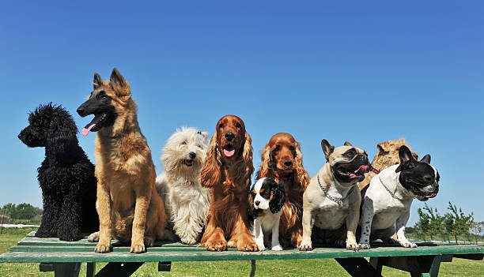

¿Queres saber mas sobre nosotros? ¡Aca tenes la respuesta!

La veterinaria es una disciplina esencial que garantiza no solo la salud y el bienestar de los animales, sino también la protección de la salud pública y el equilibrio de los ecosistemas. La convivencia entre humanos y animales es una realidad cotidiana que requiere cuidado, conocimiento y responsabilidad. La veterinaria existe para prevenir enfermedades zoonóticas, asegurar una producción animal ética y segura, y brindar atención médica a millones de animales de compañía que forman parte integral de nuestras familias. En un mundo donde los vínculos con los animales son cada vez más profundos, el rol del médico veterinario es insustituible y cada día más relevante.
Nos llevó el amor profundo por los animales, la curiosidad científica, y una vocación de servicio que trasciende lo profesional. Ser veterinarios no es simplemente una elección académica: es un compromiso con la vida, con el sufrimiento ajeno, y con la posibilidad de sanar. Cada uno de nosotros fue marcado, en algún momento, por una experiencia personal —un animal enfermo, una conexión emocional, una injusticia hacia un ser que no puede defenderse— que nos impulsó a estudiar, a formarnos y a dedicar nuestra vida a esto. Lo que nos trajo aquí fue la convicción de que podíamos hacer una diferencia real, cuidando a quienes no tienen voz, pero sí derechos.